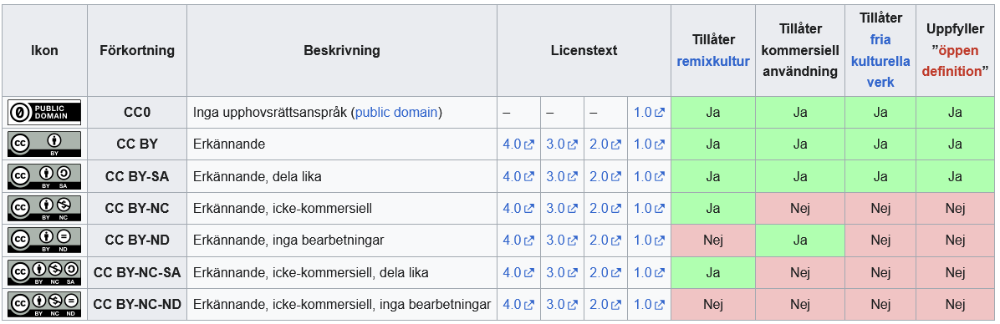

Idén om ett "intergalaktiskt datornätverk" togs fram av J.C.R Licklider år 1963.
Tanken med internet var att skapa ett pålitligt och säkert kommunikationsnätverk under kalla kriget.
ARPA (Advanced Research Projects Agency) grundades under kalla kriget år 1958.
ArpaNET, utvecklad av ARPA och började användas 1969.
Ingen dator kunde vara centraldator eftersom en attack skulle stoppa all kommunikation.Genom att det decentraliserade nätverket kunde flera användare kommunicera samtidigt och på samma gång göra alla datorer oberoende av en centraldator. Det säkerställer två saker, ett att nätverket kunde fortsätta även om vissa noder kopplas bort, två att prestandan blir bättre då ArpaNET baseras på packet switching
Fördelen med ett distribuerat nätverk är att nätverket skyddar sig från attacker eller errors genom att utesluta en centraldator. En centraldator kan bli överbelastad då den används för all kommunikation, vilket orsakar en bottleneck. Genom att tillåta alla datorer att direkt kommunicera med varandra via ett packet switching system undviker man att infrastrukturen försätter även om en del av den förstörs.
WWW står för WorldWideWeb
Ett IP-nummer alternativt IP-adress är ett unikt nummer som tilldelas till din dator/enhet för att kommunicera på internet. Internet Protocol Address v4 är den vanligaste IP-adressen och är baserad på ett 2^32-binära system vilket innebär att det finns ca 4,3 miljarder adresser. Det fungerar med att identifiera IP-adresserna och sedan kan data-paket skickas från avsändarens IP till mottagarens IP.
TCP/IP (Transmission Control Protocol) garanterar att all data som skickas mellan två IP-adresser kommer fram korrekt och i rätt ordning. Den justerar mängden data och förhindrar överbelastning samt säkerställer en effektiv kommunikation samtidigt som den felsöker kommunikationen via en three-way handshake.
Internet började användas så tidigt som 1990 när konceptet WWW togs fram av Tim Berners-Lee men då den vanliga arbetarklassen inte hade tillgång till datorer ansågs internet bli mainstream i USA 1996 och vid 2001 användes det över hela världen.
De protokoll som används över internet är HTTPS, UDP, TCP, FTP, SSH. Man kan även kolla på OSI modellen för att få en uppfattning om hur det fungerar.
Innan HTML använde man sig av SGML (Standard Generalized Markup Language) som utvecklades 1980 och anses vara mer komplex och användarovänlig. SGML var utvecklad för att skapa och definiera olika typer av dokument på internet men användes inte så länge då en tidig version av HTML togs fram 1991.
Gopher skapades av Mark P. McCahill år lanserades 1991. Den var mappbaserad, vilket innebär att navigeringen sker genom att klicka på kategoriernas rubriker för att surfa runt på internet. Den har numera gjort sin del på internet då den togs över av WWW konceptet.
De första webbläsarna som användes var WorldWideWeb (Nexus) Skapad av Tim Berners-Lee lanserades 1991 och är vad vi främst använder idag. Mosaic Skapad av Marc Andreessen och Eric Bina och lanserades 1993 och stödjer bilder med text vilket gjorde internet attraktivt. Netscape Navigator Skapad av Marc Andreessen lanserades 1994 vilket var en slimmad och mer välutvecklad version av Mosaic Internet Explorer Skapad av Microsoft och lanserades 1995 och blev snabbt den mest populära webbläsaren då den använde allt i ett
Redan 1970 började datorer användas då PC (Personal Computer) konceptet togs fram 1980 började PC bli vanligare bland folket och det såldes till allmänheten. 1995 lanserades Microsoft Windows 95 med sin nya IE (Internet Explorer) och tog allmänheten med storm då folk började förstå vad en PC i kombination med internet är. 2000 blev PC en del av vardagen, även om den ansågs vara en lyxprodukt så fanns den i nästan alla hushåll och i det tidigare steget i PC/Internet kombo historia började.
Internet används idag till primärt för sitt ursprungliga syfte, kommunikation. Men det är så pass populärt att det nästan kan ses som det sjätte elementet, den används i vardagen till all, Internetköp allt från att handla, banktjänster och försäljning av produkter eller tjänster. Molnlagring för att spara arbete, bilder eller media. Forskning i alla dess syften. Den används till din vildaste fantasi och är endast begränsad till av vad du begränsar den till.
URL (Uniform Resource Locator) är ett sätt för en webbadress att identifiera och lokalisera saker på webben. Den fungerar ungefär på samma sätt som en IP-adress och krävs för att en kommunikation ska kunna ske. Vi ser vanligvis URL arbeta med HTTPS, FTP eller DNS.
HTML (Hyper Text Markup Language) utvecklades av Tim Berners-Lee och lanserades 1991 HTML används för att skapa och strukturera innehåll på webbsidor. CSS (Cascading Style Sheets) utvecklades av Håkon Wium Lie och lanserades 1996. Den skapades för att separera innehåll från design och stil.
Syftet med CSS är att separera HTML från design så att användare kan utveckla och definiera sina webbsidor utan att blanda ihop HTML
XML (Extensible Markup Language) är en typ av progammeringstruktur som tillåter användaren att definiera sina egna taggar så att du kan skapa specifika taggar för specifikt innehålle t.ex. <'person>Tommy<'/person> Sedan specificera vad 'Tommy' ska göra eller hur den ska agera. Det som skiljer XML och HTML är att XML används för att lagra och transportera data medan HTML används för att strukturera och presentera data.
Det finns ingen som tar ansvar för INTERNET eftersom det är ett decentraliserat nätverk, men det krävs flera olika företag som får internet att fungera. ISP (Internet Service Providers) är det företag som användaren anlitat för att få internetuppkoppling i hemmet IXPs (Internet Exchange Points) är den fysiska plats där olika ISPs kopplar ihop sina nätverk ICANN (Internet Corporation For Assigned Names and Numbers) är de som hanterar DNS och IP-adresser globalt CDN (Content Delivery Networks) är det som hanterar webbplatsinnehåll till användaren Övriga så som WhiteHats, BlueHats, IT-support ITU(Internet Telecommunication Union) eller CERT(Computer Emergency Response Teams) Så beroende på vad eller vilket som går sönder så är det någon av dessa som fixar problemet.
JAVA utvecklades av James Gosling och hans medarbetare på Sun Microsystems och det första JAVA programmet släpptes 1995. Kortfattat så påverkade JAVA internet och internetsutveckling genom Javascript som används för att bygga progam eller applikationer samt översätta olika programmeringsspråk. Säkerhetsmodellen som JAVA utvecklade tillät användaren att köra externa koder utan att riskera sin hårdvara. Javaprogram eller Java-applikationer kunde köras på vilken dator som helst med hjälp av JVM (Java Virtual Machine) utan att behöva anpassas för varje enhet.
Java Applets är en funktion som tillåter små program att köras direkt i webbläsaren utan att behöva installeras direkt på datorn. Det var det första sättet att köra interaktiva program så som spel eller interaktiva formulär direkt på webben.
Ett serverspråk (Server-Side-Language) är ett programmeringsspråk som används för att skapa och hantera webbserverlogik, användardata och interaktivitet på webbsidor. Det finns ett flertal olika serverspråk men de vanligaste är C# Java PHP Node.js
PHP (Personal Home Page Tools) skapades av Rasmus Lerdorf 1993 och lanserades 1995 som en open-source code. Den används idag som det mest populära serverspråket när det kommer till webbapplikationer.
ASP och JSP är till för att skapa dynamiska webbsidor via serversidan, men de skiljer sig åt. ASP (Active Server Pages) är ett server-side-langauge som utvecklades av Microsoft. Den används för att skapa webbappar och webbsidor med HTML och SQL, men i dagsläget används numera ASP.NET. JSP (JavaServer Pages) är också ett server-side-langauge skapat av Sun Microsystems. Den används också för att skapa webbappar och webbsidor men integreras med Java baserade system. Idag är det mer känt som Oracle.
Javascript är ett programmeringsspråk som används för att skapa webbsidor eller program, det kan köras direkt i webbläsaren med hjälp av HTML och CSS Javascriptets ansvar är för klientsidans språk. Serverspråk ansvarar för backend "logiken", där datalagring och säkerhet spelar större roll. Några av de mest vanliga serverspråken är, PHP, Python, C# mm.
Facebook eller TheFaceBook skapades 2004 av Mark Zuckerberg tillsammans med Eduardo Saverin, Andrew McCollum, Dustin Moskovitz och Chirs Hughes. Det är idag en av världens största sociala plattformar och blev tillgänglig för allmänheten 2006
Skype skapades av Niklas Zennström och Janus med hjälp av Ahti Heinla, Priit Kasesalu och Jaan Tallinn år 2003 Den utvecklades som en plattform för röstkommunikation över internet och köptes 2005 av ebay för 2,6 miljarder dollar. Skypes framgång och popularitet växte och köptes sedan av Microsoft år 2011.
Spotify skapades av Daniel Ek och Martin Lorentzon år 2006. Den utvecklades i syfte med att bekämpa pirating då The Pirate bay var en av de största hemsidorna i världen. Spotify revolutionerade inte bara musikindustrin utan också hur vi lyssnar på musik än idag.
Copyleft används för att se till att öppen källkod och fri programvara inte begränsas eller monopoliseras, så att vem som helst kan använda, ändra och dela den. Det fungerar som motsatsen till Copyright, som skyddar skaparen genom att ge ensamrätt till verket.
Det finns flera olika Copyleft-licenser GNU (General Public License) Den mest kända och kräver att alla modifierade versioner av programvara ska vara under GPL LGPL (Lesser General Public License) En mild variant av GPL AGPL (Affero General Public License) Täcker mjukvara som används över nätverk CC BY-SA (Creative Commons Attribution-ShareAlike) Används för kreativa verk som mediafiler, musik eller bilder
Man kan lätt känna igen Copyleft symbolen med U+1F12F i Unicode alternativt
CC (Creative Commons) är ett system som gör det lättare att dela återanvända eller manipulera kreativt material tex bilder, musik, texter eller program. Det säkerställer att skaparen kan dela sitt verk eller skapelse med världen utan att förlora rättigheterna över den. Skaparen kan också sätta regler för hur verket ska hanteras eller manipuleras.

GDPR (General Data Protection Regulation)reglerar bland annat hur personuppgifter samlas in, lagras, används, och delas, och ger individer större kontroll över sina egna uppgifter. Den ger dig också rättigheten att få dina uppgifter raderade.
GDPR togs fram den 25 maj år 2018
GDPR och PUL är i teorin ganska lika men PUL anses vara en väldigt mild version och tillochmed lite vilse ledande då den inte presenterades korrekt för användaren. GDPR (General Data Protection Regulation) Är idag den största lagen som skyddar användarens rättigheter. Den är transparant vilket gör att användaren vet när och var den krävs. GDPR togs även fram av EU parlamentet så den gäller i hela Europa och har ett sanktionssystem som kan bötfälla företag som missbrukar dess lag. PUL (Personuppgiftslagen) var den grundläggande dataskyddslagen som reglerade behandling av personuppgifter, men den gällde endast i Sverige och togs med en nypa salt.
Uppgifter får bara lagras för tydligt angivna ändamål och endast om det är nödvändigt. De får inte sparas längre än vad som krävs för ändamålet, och ska raderas eller anonymiseras när de inte längre behövs. Lagringen måste baseras på en godkänd grund, som samtycke, avtal eller rättslig skyldighet. Organisationer måste dessutom dokumentera hur de följer reglerna.
Om man hittar en bild på webben och vill använda den, måste man förstå upphovsrätten för att undvika juridiska problem. Upphovsrätten för bilder innebär att skaparen eller rättighetsinnehavaren har exklusiva rättigheter att använda, distribuera och modifiera bilden. Läs mer om upphovsrätt på Riksarkivet - Upphovsrätt. Bilder som är i Public Domain är inte längre skyddade av upphovsrätt och kan användas fritt av alla. Det är också viktigt att följa riktlinjer för Creative Commons (CC)-licenser. Se till att du förstår villkoren för licensen, som kan kräva att du ger upphovspersonen erkännande, inte modifierar bilden eller använder den för kommersiella ändamål, beroende på licensens typ. Om bilden inte har en tydlig licens, kontakta upphovspersonen och be om tillstånd att använda bilden.